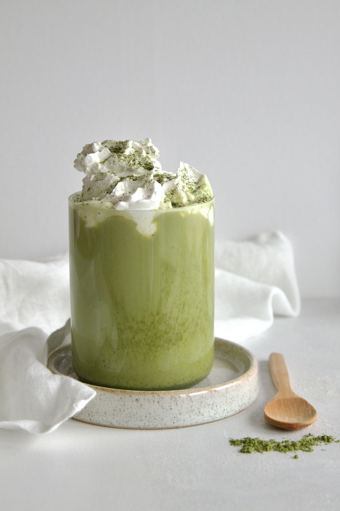

A classic Japanese-style drink that's creamy, smooth, and balances the slightly bitter taste of matcha with the smoothness of milk.


Experience the perfect blend of Japanese tradition and modern taste.
